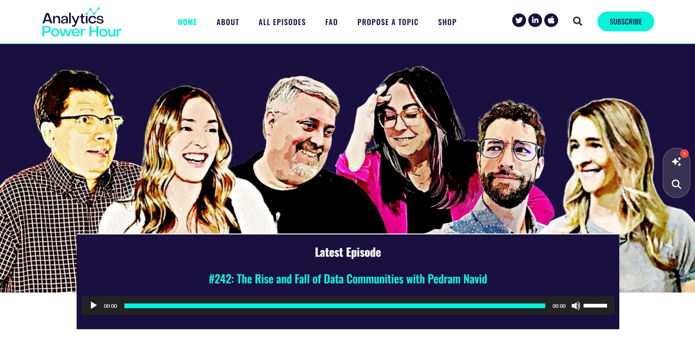
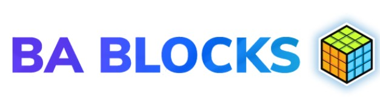
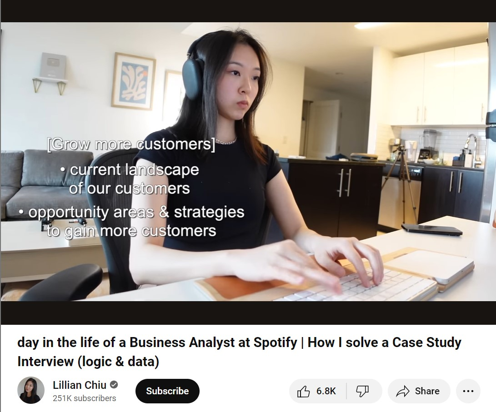
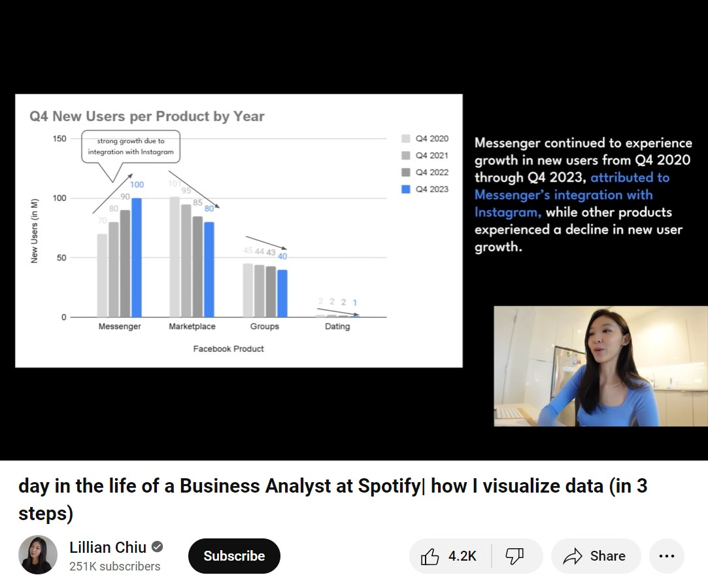
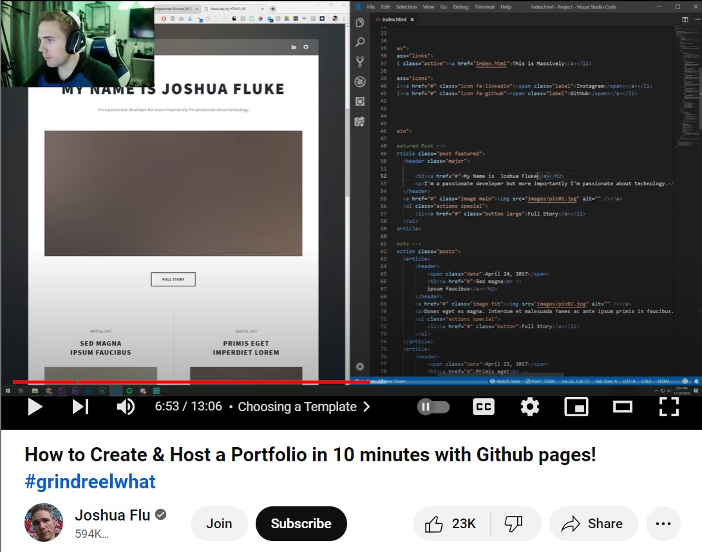
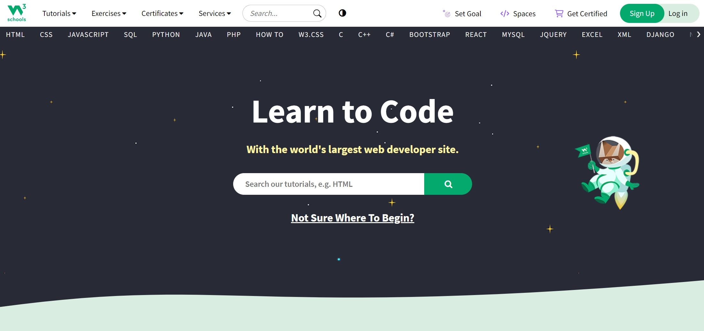
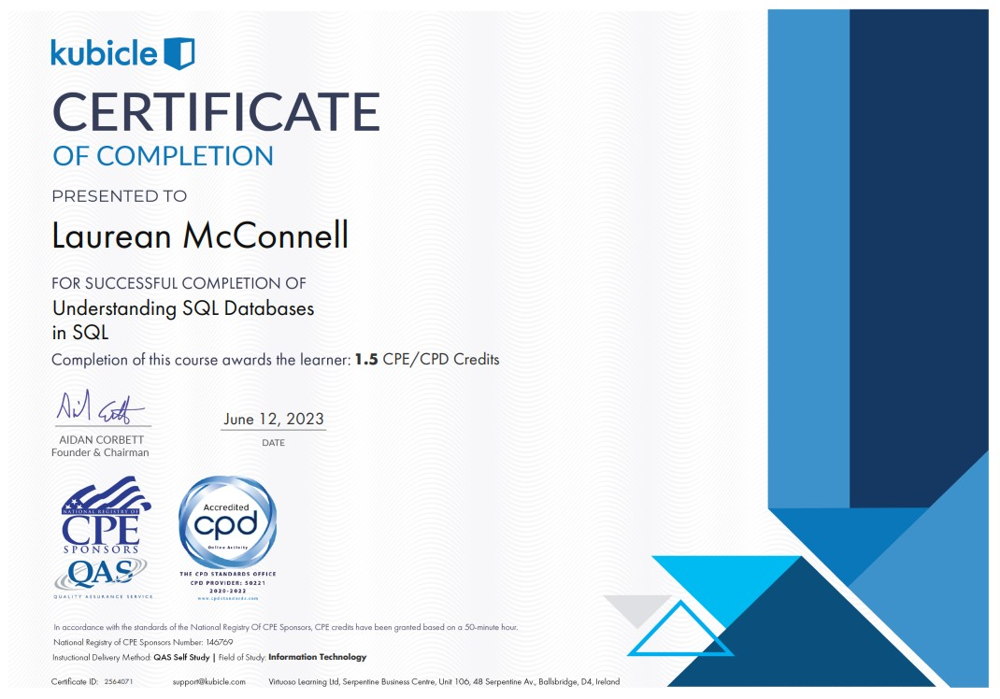

Here I have a collection of different media which I used to improve my Data Analytics Skills. It includes media such as pdfs of certificates, youtube videos and podcasts which aided in my learning.

Analytics Power Hour Podcast
This is a podcast hosted by 5 people in the Business Analytics field. These people have very different titles and specialism. Ranging from a managing partener specialising in the use of stacked analytics to a Data and Analytics employee. They disscuss topics such as the rise and fall of data communities. It is nice to hear a professional podcast about the potential career I could go into. They also occasionally have guests from the Data Analytics community.
The Real Python Podcast
This is a weekly podcast hosted by Christopher Bailey who gives tips and tricks for Python, and the latest updates and tools. He interviews figures from the Python community and gains tips from them. Him and guests outline the best practices, career tips and software development topics. A particularly interesting episode was Episode 195: Building a Healthy Developer Mindset While Learning Python. I found it very comforting that even these experienced people have problems with python.

BA BLOCKS for Business Analysts
This is a podcast about helpful tools for Business Analysts. A particularly good episode was Episode 7: How to Ace Your Next Business Analyst Interview. I felt their tips were very useful to stay calm and not show my nervousness. I found this important to remember as I often find myself getting very stressed about interviews. Hearing about how the interviewee Rishi calmed himself down was very interesting.

Day in the Life of a Business Analyst
This is a youtube video of the day in the life of a business analyst. Though it seems like a more casual video, she talks a lot about where to begin when you are a business analyst. She talks about translating the business question from her manager, and how this can be split into a logical framework. Her explanations are clear and easy to understand. She uses the data to create a recommendation which can be easily understood by her manager.

Data Visualisation Tools
I really enjoy this casual aproach to an introduction to a career in Business Analytics. It is not just an academic approach, she talks about the real conversations she has with employers, with compliance with GDPR. She talks about how it is crucial to create a story with the data, to compare the quarters by year. She also talks about avoiding cluttering the graph. She uses arrows to draw users attention, and use a callout box to visually summarise the key points you want to make.

Useful Video to upload HTML to GitHub and create a website.
This was another useful youtube video which I used to generate a website on GitHUb from my HTML temmplate. It also aided me in altering HTML pages which I found quite difficult. GitHub can often be quite tempermental when uploading a website, if one thing is done incorrectly, it is often best practice to create a new repository and reupload files.

Crucial Website - W3Schools
This website was crucial in my learning. It has information and tutorials for different programming languages. It includes HTML, CSS, SQL, Python among others. Particularly for the creation of my portfolio using HTML and CSS, I was unfamiliar with these languages so these websites really helped me to convey things I wanted to show.

Personal Learning on Kubicle
Here I have a collection of certificates I generated from finishing various courses in Kubicle. This includes 17 certificates from courses for word, powerpoint and excel. Along with different python and Jupyter notebook courses, including how to use k-means clustering and classification techniques. I also completed courses on Statistical Analysis such as Linear Regression. I also completed courses on the use of Tableau and SQL.